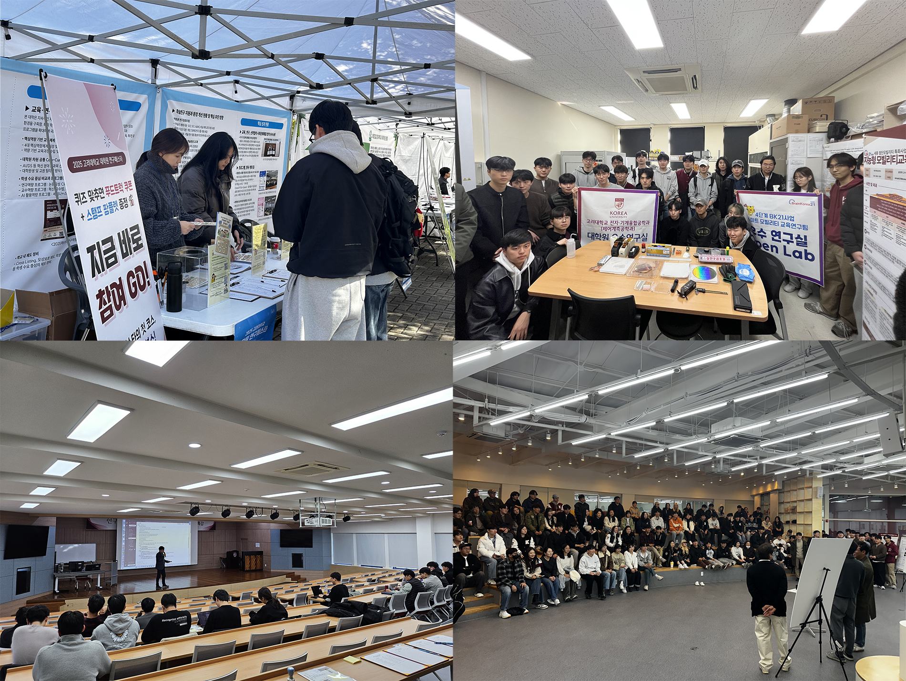
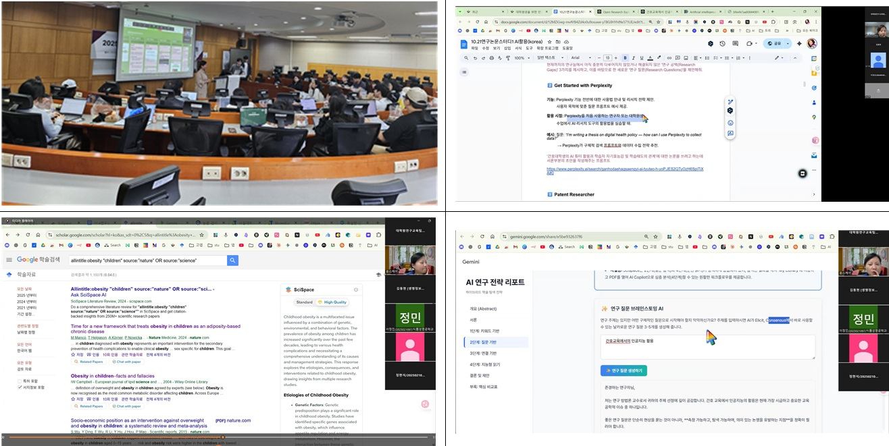
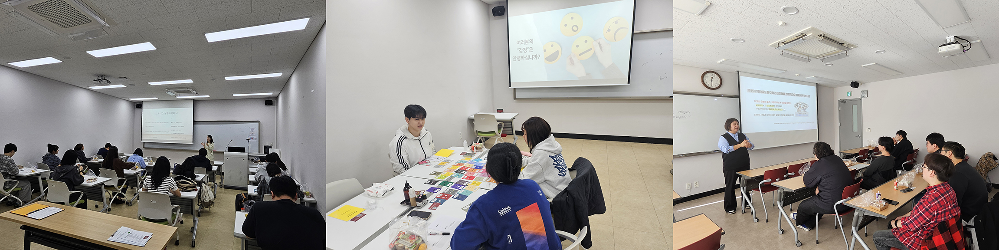

🎊 10월 프로그램 결산
🎪 대학원생 연구페스타
중앙광장 및 캠퍼스 전역에서 펼쳐진 연구자들의 축제
10월의 가장 큰 행사였던 연구페스타가 중앙광장을 중심으로 캠퍼스 전역에서 성황리에 진행되었습니다. 학교 연구의 최전선에서 활약 중인 연구실들이 직접 연구 현황과 성과를 공유하고, 연구 현장을 둘러볼 수 있는 투어 프로그램과 진로 특강, 심리검사까지 함께 진행되며 어느 때보다 풍성한 하루였습니다! 약 100여 명의 대학원생이 찾아주며 큰 관심을 보여 주었고, 참여해 준 모든 분들 덕분에 더욱 의미 있는 연구페스타가 되었습니다. 진심으로 감사드립니다 :)
🤖 AIM UP Program
연구자를 위한 AI 기반 논문 검색·작성 특강
매주 화요일, 온라인에서 진행된 AIM UP Program은 AI를 활용한 논문 검색과 작성 방법을 중심으로 진행되었어요. 약 20여 명의 연구자들이 함께하며 교육과 멘토링을 받았고, ChatGPT와 SciSpace 지원 덕분에 실제로 나오는 결과물들의 완성도가 매우 높았습니다. 이번 프로그램을 통해 AI가 연구 생산성을 높이는 데 얼마나 도움이 되는지 체감하고 돌아간 학생들이 많았어요. 내년에는 더 많은 도구와 강의로 AI 지원이 확대될 예정입니다! 잊지 말고 지원해주세요 :)
💝 대학원생 정신건강(마음챙김) 프로그램
지친 마음을 돌보고, 나를 다시 바라보는 시간
10월과 11월 동안 진행된 마음챙김 프로그램에서는 대학원생들의 감정과 스트레스를 함께 들여다보고 회복할 수 있는 다양한 활동들이 이어졌습니다. MBTI 기반 소통 방법, 아로마 테라피, 감정 이해 및 성찰 활동 등을 통해 조금이라도 마음의 무게를 내려놓는 시간을 가졌어요. 회차당 약 10여 명이 방문해 꾸준히 참여해 주었고, 고민이 많았던 친구들에게 작은 쉼표가 되었기를 바랍니다.
